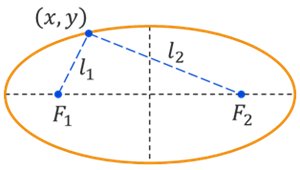
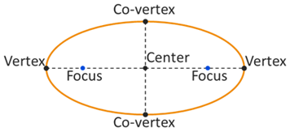

Ellipses
Conic Sections
Conic Sections
A simplistic way of thinking about ellipses is that they are a circle that has been stretched differently in perpendicular directions. Imagine taking a circle and stretching it horziontally or shrinking it vertically. The end result would resemble an ellipse. Let's look at a more formal definition of an ellipse and the various properties of ellipses.
An ellipse is a curve formed by all points where the sum of the distances to two fixed points called foci (plural of focus) is constant.
In the illustration above, the two distances between the point \((x,y)\) and the two foci are represented by the variables \(l_1\) and \(l_2\). Being an ellipse means that the sum \(l_1 + l_2\) must remain constant. In other words, the individual distances \(l_1\) and \(l_2\) will change as we look at different points \((x,y)\) around the ellipse, but their sum will always be the same.
In the illustration below, the key points on an ellipse are marked. The longest diameter of an ellipse is called the major axis and its endpoints are the vertices. The shortest diameter of an ellipse is called the minor axis and its endpoints are the co-vertices. The foci, or focus points, are located along the major axis.
Use the following graph to explore the shape and key property of ellipses. Select the Ellipse option and then drag the blue point to explore the graph's characteristics.
The equation of an ellipse has two forms, depending on whether the ellipse is oriented vertically or horizontally. The orientation is determined by the direction of the major axis.
The standard conic equations of a ellipse with center at the origin have the following form.
Assuming that \(a > b > 0\), the vertices are located at \((\pm a,0)\) while the co-vertices are located at \((0,\pm b)\). The foci are at \((\pm c,0)\). The major axis has a length of \(2a\) and the minor axis has a length of is \(2b\). The distance between the foci is \(2c\).
Assuming that \(a > b > 0\), the vertices are located at \((0,\pm a)\) while the co-vertices are located at \((\pm b,0)\). The foci are at \((0,\pm c)\). The major axis has a length of \(2a\) and the minor axis has a length of is \(2b\). The distance between the foci is \(2c\).
The main difference in these two equations is whether the ellipse is oriented horizontally or vertically, or whether the major axis is horizontal or vertical. In both cases, we assume that \(a > b\). In the horzontal orientation, \(a\) is under the \(x\) variable and \(b\) is under the \(y\) variable. This flips for the vertical ellipse where \(a\) is under \(y\) and \(b\) is under \(x\). The values of \(a\) and \(b\) represent how much the ellipse has been stretch, so having a larger \(a\) value under \(x\) means the ellipse is wider (longer in the \(x\) direction) while having a larger \(a\) value under \(y\) means the ellipse is taller (longer in the \(y\) direction).
It might be helpful to think of the values of \(a\), \(b\), and \(c\) as distances, especially when we want to determine the coordinates of the vertices, co-vertices, and foci. We use \(a\) to represent the longest radius from the center to each vertex. Similarly, we use \(b\) to represent the shortest radius from the center to each co-vertex, and we use \(c\) to represent the distance from the center to each focus point. These three values, or distances, are related to each other by the equation \(c^2 = a^2 - b^2\).
The eccentricity of an ellipse describes the degree to which an ellipse is stretched compared to a circle. We can compute the eccentricity using the equation \(e = \frac{c}{a}\), and we will have an ellipse if \(0 < e < 1\). If the foci are located at the same point, then they would be at the center of a circle and \(e = 0\).
The key characteristics of an ellipse in conic form are the coordinates of the center, vertices, co-vertices, and foci as well as the lengths of the major and minor axes and the value of the eccentricity.
We need to be able to write the standard equation of an ellipse given information about it, such as the location of its foci and vertices or its graph. We also need to be able to sketch a graph of an ellipse given the equation and identity its key characteristics. Let's look at a few examples.
©2025 M4thG33x (new window) Some Rights Reserved.